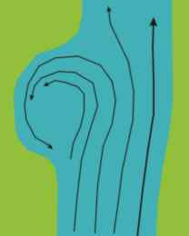
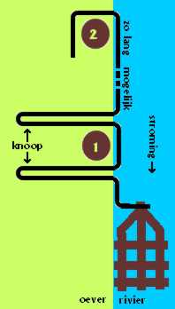

Steven was er al om 4:30 uur uit en had een koude nacht gehad. Het regende enorm. Ik ging rond 5:00 uur uit de tent en het bleef keihard regenen. Steef en ik bleven onder de tent staan en we wachtten tot Ries klaar was met al zijn zaakjes. We aten onder de tent één pak met 21 crackers op. We hadden nu nog een pak crackers over; het laatste voedsel dat we onbereid konden opeten.
Het plan was zo snel mogelijk te vertrekken met het vlot. We braken de tent af in de stromende regen. Alles werd nat. Twee balkjes van de tentconstructie konden we nog voor het vlot gebruiken; de rest van het hout (zoals hout van de rubberboom) dreef toch niet en konden we dus beter achter laten. Nadat we alles ingepakt hadden, dronken we nog wat rivierwater. De waterfilter was nog steeds kapot en het water filteren met een koffiefilterzakje of koken duurde te lang. Wel gebruikten we Hadex om het water te ontsmetten, waarna je het niet meer voor je plezier drinkt (chloor). Het vlot lag nog net op het droge, maar het water steeg erg snel. Voordat ik de rugtassen op het vlot kon vastbinden, bond ik eerst de twee stammetjes van de tent vast. Het water steeg zo snel, dat ik de meeste knopen onder stromend water moest vastmaken. Gelukkig zat het vlot zelf stevig vast aan een grote boom met ons dikste touw. Richard stond al een tijdje op een heel dikke boomstam en hield de rugtassen paraat die ook op het vlot moesten worden vastgebonden. Ook hij had steeds meer last van het stijgende water. De stam waarop hij stond, met twee zware rugtassen, was nu helemaal onder water. De tassen lagen half in het water en Ries gaf aan dat hij het nog maar even vol kon houden. Ik legde als een gek mijn laatste knopen, zodat ik alvast een rugtas van Ries kon overnemen. Deze bond ik weer zo strak mogelijk vast aan het vlot. Het touw sneed in mijn handen, maar ik had geen tijd om me daar druk om te maken. Ik kon niet op het vlot zitten, want dan zou het te veel zinken, zodat ik de tassen niet goed vast kan knopen. Tot aan mijn borst stond ik in het water en knoopte alle drie de tassen zo strak mogelijk op het vlot. Het vlot stond erg onder spanning. Van het touw waarmee het vlot vast zat, was ongeveer 10 meter gebruikt; de overige 20 meter was helemaal door de war geraakt. Zelfs onder water (wat gisteravond nog droog was) zat het in de knoop. Met moeite haalden we alles uit de knoop en rolde ik het touw op.
Nu kwam het grote moment: ik haalde de laatste knoop los, waarmee het vlot aan een dikke boom bevestigd was en ik sprong zo snel mogelijk op het vlot, waar Steef en Ries al op zaten. We namen elk weer ons eigen positie in. We moesten meteen zwemmen (terwijl we goed het vlot vasthielden) om te voorkomen dat we tegen een dikke liaan aan zouden botsen die in de rivier hing. Toen we eenmaal dreven, dreven we heerlijk. De stroming was sterk en we hadden daardoor een behoorlijke snelheid: minstens zo snel als de heenweg, toen we met een gemotoriseerde longboat stroomopwaarts voeren. We zijn twee keer in een grote kom blijven 'hangen' waar we slechts met veel moeite uit kwamen.
|  |
Als je eenmaal in een 'kom' of een 'inham' zit, dan blijf je steeds maar rondjes draaien. Om daar met een vlot uit te komen, is soms erg moeilijk. De pijlen geven de stromingen weer. |
We zagen in de verte een heel grote inham aankomen. Normaal gesproken zouden we keihard zwemmen en zo deze proberen te ontwijken. Nu deden we niets en we lieten het lot beslissen. We kwamen in de inham. Opeens was daar een grote draaikolk. Deze kolk zoog ons inclusief het hele vlot met de rugtassen zo'n 2 meter onder water. Ik hield me krampachtig vast aan het vlot en vertrouwde erop dat we weer boven zouden komen. Richard hield het vlot met zijn voeten vast en hij merkte dat zelfs zijn hoofd onderwater getrokken werd. Jezelf blijven vasthouden is heel belangrijk, want je bent elkaar zo kwijt. Na zo'n 20 à 25 seconden kwamen we weer boven water. Ik zag Ries en Ries zag mij. We keken beide met getraumatiseerde blikken om ons heen: "Waar is Steven?!!" We zagen Steven nergens meer. We raakten werkelijk in paniek! Na circa 10 seconden kwam Steven boven water met heel veel paniek op zijn gezicht. Dit waren 10 heel lange seconden! Hij moest nog zo'n 8 meter zwemmen om weer bij het vlot te zijn en gelukkig lukte hem dat nog. Wij zouden met het vlot nooit naar hem toe kunnen varen. In dat geval zou Richard of ik ook het vlot moeten verlaten om Steven te redden. Dit was gelukkig niet nodig. Ik was deels opgelucht, maar Steven was zichtbaar nog erg getraumatiseerd. Op het moment dat Steven onder water werd gezogen, bleek hij absoluut geen lucht te hebben en kreeg hij ook nog eens een slok water binnen. In zo'n geval is elke seconde onder water er al één te veel! Vooral als je niet weet wanneer je weer boven komt. We kwamen terecht in de tegenstroming en bereikten de oever van de rivier waar we vervolgens konden aanmeren.
Ik ontknoopte de zeiknatte en dus loodzware tassen. Het was nu 10:30 uur, terwijl we 8:15 uur vertrokken bij ons vorige kamp. We hadden het echt koud en Steven was nog niet van de schrik bekomen. Ik had vandaag tijdens het varen mijn overhemd aangehouden en dat beviel goed. Uiteraard wordt deze zeiknat, maar toch hielp het voor mijn gevoel tegen de koude. Om op te warmen pakte ik de brander en ik begon met het bereiden van 3 pakjes indo-mie. Daarna aten we nog een hele pan warme rijst op dat we met sambal, ketjap of suiker op smaak brachten. Vuur maken zou uren duren, dus gebruikten we de benzinebrander. De rivieroever waar we aangemeerd waren, was weer erg steil. Het dekseltje van ons pannetje wat we ook als bakpannetje gebruikten, gleed zo de rivier in, evenals de zak met rijst. Gelukkig hadden we de rijst keurig verdeeld in meerdere zakken en die weer over meerdere personen. Ik heb nog wel even naar het dekseltje onder water gezocht. Tevergeefs, want de rivierbodem is net zo steil als de rivieroever.
We discussieerden wat we nu moesten doen. We begonnen aan een plan wat eigenlijk onbegonnen werk was: het vlot via de oever van de rivier voorbij de kom brengen. Omdat langs de oever de stroming in een kom tegendraads is, zouden we het vlot zo'n 100 meter tegen de stroom in moeten verplaatsen. Steven wilde absoluut niet op de gebruikelijke wijze de kom proberen te trotseren en dat is natuurlijk begrijpelijk. Dus begonnen we aan het nieuwe plan. De theorie is als volgt. Neem het sterke touw van 30 m, waaraan het vlot bevestigd is, en voer de volgende stappen uit:
|  |
Het touw zit eerst om boom 1 geknoopt. Dan gaat het uiteinde van het touw om boom 2 (20 m verder). Dan wordt de knoop bij boom 1 losgehaald en er wordt met veel kracht aan het touw om boom 2 getrokken. Hopelijk kan zo het vlot tegen de stroming in verplaatst worden. |
Het was al weer 14:45 uur en we begonnen met het bouwen van de tent. De oever was zo steil, dat degene die aan de rivierkant zou liggen, zo'n kleine 3 meter boven de grond zou slapen. Degene die aan de jungle-kant zou liggen, zou slechts een halve meter boven de grond liggen. De jungle hier was erg dicht begroeid en geschikt hout was moeilijk te vinden. Ik miste de parang waarmee ik altijd zo lekker de begroeiing om me heen weg kon hakken. Tijdens het bouwen van de tent, struikelde ik over een balkje en Ries zijn 'waterdichte' Beversportzak die hij gebruikte bij het koken, gleed zo de rivier in evenals een volle Fanta-fles met water. Ries begreep meteen wat er gebeurde. "Duiken!", schreeuwde hij. Steven sprong vliegensvlug het water in en redde de Beversportzak. De Fanta-fles was nergens meer te vinden. Zonder deze Beversportzak zouden we sambal, ketjap, zout, kruiden, koffie, thee en vele andere dingen moeten missen. Bovendien bevatte de zak Ries' lepel, beker en nog wat andere zaken. Na de eenvoudige maaltijd (rijst met maggie-kruiden, sambal, suiker en Hadex) was het pikdonker.
We moesten het tentzeil nog spannen, want daar waren we niet aan toe gekomen. Mijn zaklamp deed het nauwelijks, want hij was gisteren in het water gevallen. Van een tweede zaklamp waren de batterijen vrijwel op en de derde had ook bijna geen bereik. Bij het spannen van het tentdoek gebruikten we weer veel natuurlijke bevestigingsmaterialen die toevallig in de buurt hingen. Ries wachtte keurig onder de tent totdat Steef en ik klaar waren met opspannen. Het gaf mij een kick om het zeil grotendeels op te spannen zonder touw nodig te hebben! Vanwege het vlot en de tent hadden we een touwgebrek; vele touwtjes had ik al door midden gesneden. Rond 19:15 uur klom Ries als eerste de tent in. Hij maakte het hangzeil dat van binnen zeiknat was droog met wat papieren zakdoekjes. Vervolgens strooide hij er een lading talkpoeder overheen. Als je langere tijd in een vochtige omgeving slaapt, dan ga je behoorlijk schimmelen. We hebben daar vanwege de goede tentconstructie en het talkpoeder niet erg veel last van gehad. De mintlucht van het talkpoeder verdreef de zweetlucht. Nadat ik en Steven alle losse spullen, zoals schoenen, slippers, messen en enkele waterdichte zakken aan de uitstekende balken van de tent gehangen hadden, klommen ook wij de tent in. Steef klom als laatste de tent in. Hij lag nog maar net en we hoorden iets kraken. "Krakend hout breekt niet" was Steven's reactie. Enkele momenten later zakte Steven ruim een halve meter naar beneden. Gelukkig lag hij aan de hoge kant van de oever (niet boven de rivier). Wonderbaarlijk genoeg bleef het grondzeil heel. We hadden weinig zin om in het donker met gebrekkige zaklampen, boompjes om te gaan zagen. Dus besloten we dat we met zijn drieën in twee 'bedjes' gingen liggen. Tijdens de verplaatsmanoeuvres brak er nog een dwarsbalk. Nu was alleen mijn bedje nog gespreid. Gelukkig maar, want ik lag zo'n 3 meter boven de grond. Vanmiddag hadden we enkele balkjes uit de rivier gebruikt voor de tentconstructie. Dit is immers veel minder werk dan boompjes omzagen met al die lianen en takken eromheen! Maar het hout dreef wellicht al maanden in diezelfde kom en had zijn stevigheid verloren. En nu zaten we met de gebakken peren! Steven en ik zijn toen 1,5 uur bezig geweest met het repareren van de hangconstructie. We hadden nog twee zaklampen met zeer zwakke batterijen. Op onze slippers en met een zwembroek aan (anders wordt al je kleding weer nat) liepen we met een mes een zaag door de jungle. Elke stap die ik zette bestudeerde ik nauwkeurig met mijn zaklamp. We hadden onder andere last van stekels met weerhaakjes en vlijmscherpe bladeren. We moesten nog best ver de jungle in om geschikt hout te vinden. We waren erg kwetsbaar. We moesten zó ver de jungle in dat we af en toe twijfelden over de terugweg en bijna verdwaalden; het was immers pikdonker. Ik voelde talloze vliegjes om me heen en ze kietelden mijn huid. Later bleken Steef en ik helemaal te zijn lekgeprikt! We hadden nog ruim een week last van de jeuk... Het was tegen 21:30 uur eer we klaar waren met de reparatie. Vooral aan het eind, toen de zaklampen het bijna niet meer deden, knoopte ik de balken aan elkaar zonder enige visuele feed-back. De nacht was koud en ik had voor het eerst mijn maillot aan gedaan.
Naar de volgende dag | Index